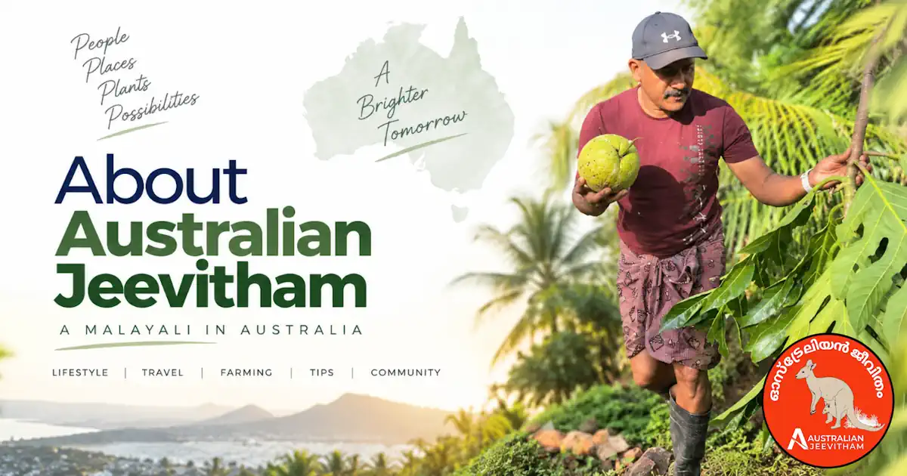
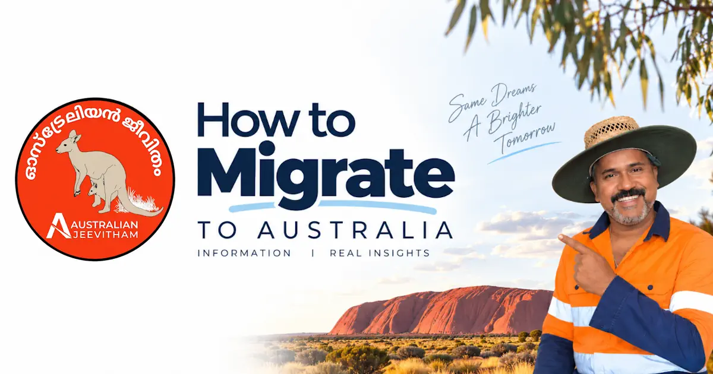

About Australian Jeevitham.
A first-hand look at Australian life for the global Malayali community - sharing everyday experiences, travel, culture, jobs, migration, settlement and backyard life, built one video and story at a time from a backyard in Queensland. ഓസ്ട്രേലിയയിലെ ജീവിതം, ജോലി, കുടിയേറ്റം എന്നിവയെപ്പറ്റി ഒരു സാധാരണ മലയാളിയുടെ അനുഭവങ്ങൾ.

An independent personal media brand - not affiliated with any government, migration agency, or migration agent.
Started by accident, continued on purpose.
Australian Jeevitham (ഓസ്ട്രേലിയൻ ജീവിതം) began almost by accident. What kept it going is simple: countless Malayalis will never get the chance to visit Australia themselves, and this channel gives them a direct, honest window into what life here actually looks like.
Alongside everyday moments - cooking, gardening, family life - the channel shares genuine information about real job opportunities in Australia and the practical realities of migration, told from personal experience rather than marketing or sales pitches.
ആരെയും ദ്രോഹിക്കാതെ, ആർക്കും ഉപദ്രവം വരാത്ത കുറച്ചു കാര്യങ്ങൾ ആണ് ഓസ്ട്രേലിയൻ ജീവിതം എന്ന ഈ ഓസ്ട്രേലിയൻ മലയാളം ചാനലിൽ നിങ്ങൾക്ക് വേണ്ടി കാണിക്കുന്നത്. താല്പര്യമെങ്കിൽ ദയവായി എൻ്റെ സോഷ്യൽ മീഡിയ ചാനലുകൾ സപ്പോർട്ട് ചെയ്യുക.
 Backyard harvest day
Backyard harvest day
Three things every piece of content follows
First-Hand Perspective
Our original videos and stories are grounded in personal experience, while practical guides also link to official sources where current rules and requirements matter.
Honest About Limits
We are not migration agents, recruiters, or a government body. Where professional advice is needed, we say so and point to the right registered authority.
For the Community
Made for Malayalis considering, planning, or curious about a life in Australia in Malayalam.
Explore our community and detailed guides

Meet the Creator
A Malayali living in Queensland documenting real Australian life — gardening, jobs, migration, and everyday moments — for the global Malayali community.
- 130K+ Subscribers
- Silver Creator Award
- Queensland

How to Migrate to Australia
A practical 2026 overview of skilled visas (189, 190, 491), employer sponsorship (482, 186), SkillSelect points, and skills assessments.
- Skilled Visas
- PR Pathways
- SkillSelect
Find Jobs in Australia
SEEK, Workforce Australia, and all eight state and territory government career sites — plus work-rights information and scam warnings.
- SEEK & Gov Portals
- Work Rights
- Scam Warnings

News Coverage
Fact-checks and features from India Today Malayalam and Manorama Online on backyard farming, toddy-tapping, and life in Townsville.
- India Today
- Manorama Online
- As Featured In

AHPRA & APC Pharmacist Registration
Knowledge Stream, OPRA exam, CAOP, 1,575-hour supervised practice, English requirements, and visa options for Kerala pharmacists.
- OPRA Exam
- 1,575 hrs Practice
- Healthcare

PR Points Calculator Guide
Complete points breakdown for Subclass 189, 190, and 491 visas, NAATI CCL Malayalam, Professional Year, and state nomination bonuses.
- 65-Point Threshold
- NAATI CCL
- GSM Visas